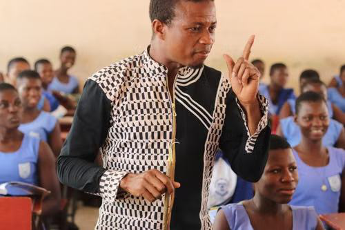
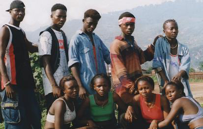
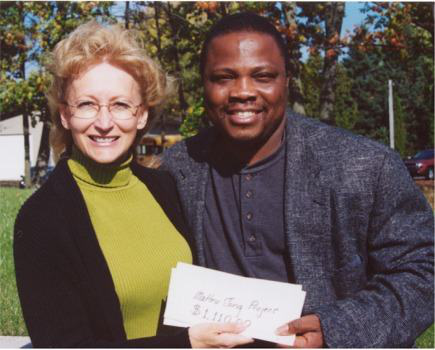
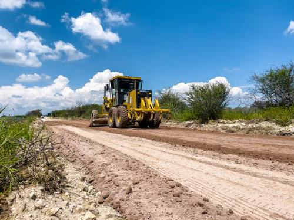

Africa / Art
Building Artistic Bridges Through Perception
Connecting artists and audiences across continents to reshape global perceptions of Africa.
Learn More →
From grassroots community building to Pan-African intellectual dialogue—explore how AYM drives sustainable change.
A platform for dialogue connecting youth, leaders and thinkers across the continent and diaspora.
Expert-led sessions accessible from anywhere.
Direct conversation with speakers and leaders.
Expanding to physical gatherings as the program grows.


Connecting artists and audiences across continents to reshape global perceptions of Africa.
Learn More →Developing 100+ acres along the Jong River into an ecotourism and enterprise hub.
Watch Videos →
A youth-led brick-making enterprise creating jobs and building materials locally.
Learn More →Small, consistent micro donations that fund youth-led projects.
Learn More →International exhibitions and conversations on Africa's image.
Taking Sierra Leonean art to audiences abroad.
Celebrating and supporting local creative talent.
Supported The Mixing Crew and the Young Sisters, whose first album was released in 2001.
Can't find the answer you're looking for? Please chat to our friendly team.